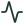
activity — koyu
ikonlar/koyu/activity.svg
activity — beyaz
ikonlar/beyaz/activity.svg
armchair — koyu
ikonlar/koyu/armchair.svg
armchair — beyaz
ikonlar/beyaz/armchair.svg
arrow-left — koyu
ikonlar/koyu/arrow-left.svg
arrow-left — beyaz
ikonlar/beyaz/arrow-left.svg

arrow-right — koyu
ikonlar/koyu/arrow-right.svg
arrow-right — beyaz
ikonlar/beyaz/arrow-right.svg

bell — koyu
ikonlar/koyu/bell.svg
bell — beyaz
ikonlar/beyaz/bell.svg
calendar-check — koyu
ikonlar/koyu/calendar-check.svg
calendar-check — beyaz
ikonlar/beyaz/calendar-check.svg
calendar-clock — koyu
ikonlar/koyu/calendar-clock.svg
calendar-clock — beyaz
ikonlar/beyaz/calendar-clock.svg

calendar-days — koyu
ikonlar/koyu/calendar-days.svg
calendar-days — beyaz
ikonlar/beyaz/calendar-days.svg

calendar — koyu
ikonlar/koyu/calendar.svg

calendar — beyaz
ikonlar/beyaz/calendar.svg
chart-column — koyu
ikonlar/koyu/chart-column.svg
chart-column — beyaz
ikonlar/beyaz/chart-column.svg

chart-no-axes-column — koyu
ikonlar/koyu/chart-no-axes-column.svg
chart-no-axes-column — beyaz
ikonlar/beyaz/chart-no-axes-column.svg

check — koyu
ikonlar/koyu/check.svg
check — beyaz
ikonlar/beyaz/check.svg
chevron-down — koyu
ikonlar/koyu/chevron-down.svg
chevron-down — beyaz
ikonlar/beyaz/chevron-down.svg

chevron-left — koyu
ikonlar/koyu/chevron-left.svg
chevron-left — beyaz
ikonlar/beyaz/chevron-left.svg

chevron-right — koyu
ikonlar/koyu/chevron-right.svg

chevron-right — beyaz
ikonlar/beyaz/chevron-right.svg
circle-check — koyu
ikonlar/koyu/circle-check.svg
circle-check — beyaz
ikonlar/beyaz/circle-check.svg
circle-user-round — koyu
ikonlar/koyu/circle-user-round.svg
circle-user-round — beyaz
ikonlar/beyaz/circle-user-round.svg
circle — koyu
ikonlar/koyu/circle.svg
circle — beyaz
ikonlar/beyaz/circle.svg
clipboard-check — koyu
ikonlar/koyu/clipboard-check.svg
clipboard-check — beyaz
ikonlar/beyaz/clipboard-check.svg
clipboard-list — koyu
ikonlar/koyu/clipboard-list.svg
clipboard-list — beyaz
ikonlar/beyaz/clipboard-list.svg
clock — koyu
ikonlar/koyu/clock.svg
clock — beyaz
ikonlar/beyaz/clock.svg
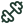
dumbbell — koyu
ikonlar/koyu/dumbbell.svg
dumbbell — beyaz
ikonlar/beyaz/dumbbell.svg
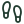
footprints — koyu
ikonlar/koyu/footprints.svg
footprints — beyaz
ikonlar/beyaz/footprints.svg
glass-water — koyu
ikonlar/koyu/glass-water.svg
glass-water — beyaz
ikonlar/beyaz/glass-water.svg
globe — koyu
ikonlar/koyu/globe.svg
globe — beyaz
ikonlar/beyaz/globe.svg
grid-2x2 — koyu
ikonlar/koyu/grid-2x2.svg
grid-2x2 — beyaz
ikonlar/beyaz/grid-2x2.svg

house — koyu
ikonlar/koyu/house.svg
house — beyaz
ikonlar/beyaz/house.svg
inbox — koyu
ikonlar/koyu/inbox.svg
inbox — beyaz
ikonlar/beyaz/inbox.svg

info — koyu
ikonlar/koyu/info.svg
info — beyaz
ikonlar/beyaz/info.svg
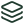
layers — koyu
ikonlar/koyu/layers.svg
layers — beyaz
ikonlar/beyaz/layers.svg
leaf — koyu
ikonlar/koyu/leaf.svg
leaf — beyaz
ikonlar/beyaz/leaf.svg
menu — koyu
ikonlar/koyu/menu.svg
menu — beyaz
ikonlar/beyaz/menu.svg

message-circle — koyu
ikonlar/koyu/message-circle.svg
message-circle — beyaz
ikonlar/beyaz/message-circle.svg
messages-square — koyu
ikonlar/koyu/messages-square.svg
messages-square — beyaz
ikonlar/beyaz/messages-square.svg
minus — koyu
ikonlar/koyu/minus.svg
minus — beyaz
ikonlar/beyaz/minus.svg

notebook-pen — koyu
ikonlar/koyu/notebook-pen.svg
notebook-pen — beyaz
ikonlar/beyaz/notebook-pen.svg
package — koyu
ikonlar/koyu/package.svg
package — beyaz
ikonlar/beyaz/package.svg

pencil — koyu
ikonlar/koyu/pencil.svg
pencil — beyaz
ikonlar/beyaz/pencil.svg
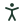
person-standing — koyu
ikonlar/koyu/person-standing.svg
person-standing — beyaz
ikonlar/beyaz/person-standing.svg
plus — koyu
ikonlar/koyu/plus.svg
plus — beyaz
ikonlar/beyaz/plus.svg
rotate-ccw — koyu
ikonlar/koyu/rotate-ccw.svg
rotate-ccw — beyaz
ikonlar/beyaz/rotate-ccw.svg
ruler — koyu
ikonlar/koyu/ruler.svg
ruler — beyaz
ikonlar/beyaz/ruler.svg
salad — koyu
ikonlar/koyu/salad.svg
salad — beyaz
ikonlar/beyaz/salad.svg
scale — koyu
ikonlar/koyu/scale.svg
scale — beyaz
ikonlar/beyaz/scale.svg
search — koyu
ikonlar/koyu/search.svg
search — beyaz
ikonlar/beyaz/search.svg
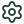
settings — koyu
ikonlar/koyu/settings.svg
settings — beyaz
ikonlar/beyaz/settings.svg

shield-check — koyu
ikonlar/koyu/shield-check.svg
shield-check — beyaz
ikonlar/beyaz/shield-check.svg
smartphone — koyu
ikonlar/koyu/smartphone.svg
smartphone — beyaz
ikonlar/beyaz/smartphone.svg
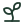
sprout — koyu
ikonlar/koyu/sprout.svg
sprout — beyaz
ikonlar/beyaz/sprout.svg
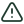
triangle-alert — koyu
ikonlar/koyu/triangle-alert.svg
triangle-alert — beyaz
ikonlar/beyaz/triangle-alert.svg

user-round — koyu
ikonlar/koyu/user-round.svg
user-round — beyaz
ikonlar/beyaz/user-round.svg
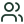
users — koyu
ikonlar/koyu/users.svg
users — beyaz
ikonlar/beyaz/users.svg
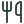
utensils — koyu
ikonlar/koyu/utensils.svg

utensils — beyaz
ikonlar/beyaz/utensils.svg
video — koyu
ikonlar/koyu/video.svg
video — beyaz
ikonlar/beyaz/video.svg
wallet — koyu
ikonlar/koyu/wallet.svg
wallet — beyaz
ikonlar/beyaz/wallet.svg

x — koyu
ikonlar/koyu/x.svg
x — beyaz
ikonlar/beyaz/x.svg
body-scale — koyu
ikonlar/koyu/body-scale.svg
body-scale — beyaz
ikonlar/beyaz/body-scale.svg
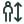
height — koyu
ikonlar/koyu/height.svg
height — beyaz
ikonlar/beyaz/height.svg
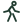
walk — koyu
ikonlar/koyu/walk.svg
walk — beyaz
ikonlar/beyaz/walk.svg
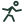
run — koyu
ikonlar/koyu/run.svg
run — beyaz
ikonlar/beyaz/run.svg

Dosya — koyu
ikonlar/koyu/file.svg
Dosya — beyaz
ikonlar/beyaz/file.svg
Gönder — koyu
ikonlar/koyu/send.svg
Gönder — beyaz
ikonlar/beyaz/send.svg

Şifreyi göster — koyu
ikonlar/koyu/eye.svg
Şifreyi göster — beyaz
ikonlar/beyaz/eye.svg
Yazdır — koyu
ikonlar/koyu/printer.svg
Yazdır — beyaz
ikonlar/beyaz/printer.svg